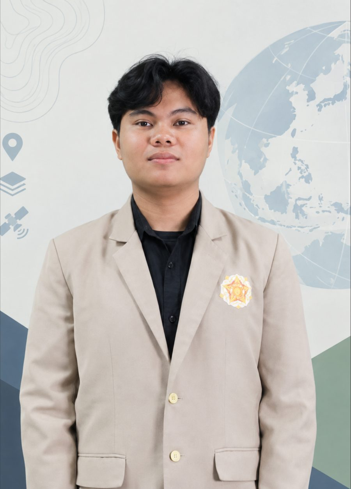

Ficking Alindra
Wijayadarma
GIS & Remote Sensing · Cartography
Cartography and Remote Sensing graduate of Universitas Gadjah Mada. I turn aerial and satellite imagery, field surveys and spatial data into maps that support planning, plantation and mining decisions.
A geographer who maps from above

I work with spatial data, satellite and aerial imagery, and GIS analysis for urban development, plantation management, environmental studies and mining. My work runs from field surveys and ground-truthing to the final map, and lately into WebGIS tools that put that analysis in a browser.
I have taught GIS and programming practicals as a lab assistant, led field courses of up to 98 students, and georeferenced mining permit maps for the provincial government of Yogyakarta.
GIS & Remote Sensing
Analysis
Code & Data
Working style
Research, teaching and fieldwork
Selected work
Click a project to see its maps in full size, the method and the numbers.
Certification & training
Looking for a GIS or remote sensing analyst?
I'm open to roles in GIS analysis, plantation and environmental mapping, and spatial data. Email reaches me fastest.